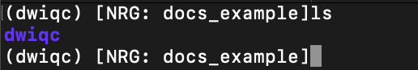
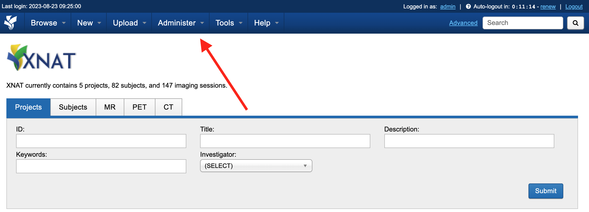
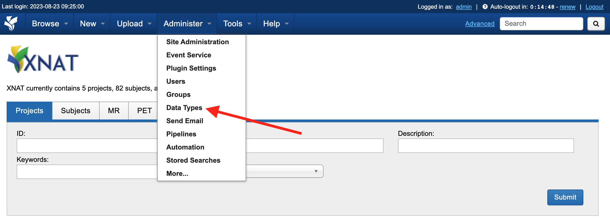
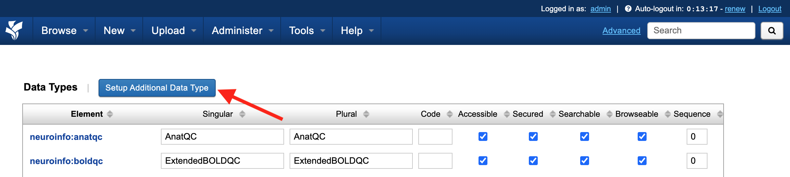
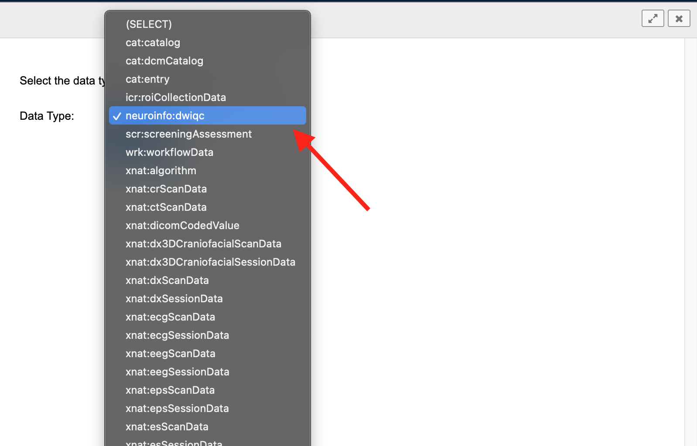
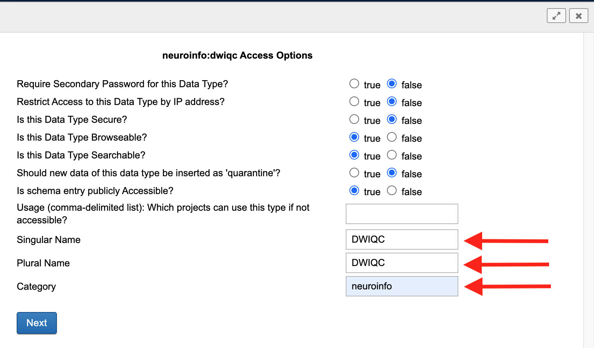

Developer Documentation
Note
This documentation assumes a basic understanding of the command line. Here’s a quick (and free!) crash course if needed.
HPC/Local Installation
At the moment, the only supported way to install DWIQC is via “bare metal” using the python package manager pip. A python version >=3.4 will come with pip preinstalled. Esnure that you have both python and pip installed on your HPC or local machine before attempting to install DWIQC.
Creating a Virtual Environment
With python and pip installed, you can download and install DWIQC from PyPi. You may choose to do so in a virtual environment. The examples here (and in other portions of the documentation) will assume that you are using a virtual environment, though it won’t affect any installation or running instructions.
To create a virtual environment, named dwiqc in this example, run the following command:
python3 -m venv dwiqc
Activate the virtual environment:
source dwiqc/bin/activate
Your terminal window should look something like this with the name of the virtual environment in parentheses and a directory with the virtual env name.
Installing DWIQC and Dependencies
Install DWIQC from the command line using pip:
pip install dwiqc
DWIQC will being installing along with some of its dependencies. It should only take a few moments. Run pip show dwiqc to ensure that it was installed successfully.
DWIQC relies on the prequal, qsiprep, chromium, and FSL software packages so we will need to download those respective containers into your local environment. DWIQC uses specific and customized versions of these packages. They can be easily installed using DWIQC’s install-containers functionality. DWIQC will default to installing the containers at ~/.config/dwiqc/containers; however, the user can specify a download directory using the --install-location commmand:
dwiQC.py install-containers --install-location /path/to/install/location
The containers will take 30-45 minutes to download depending on your connection speed. The containers will occupy ~30GB of storage space so pick a directory with plenty of free storage. Once the containers are downloaded, you’ll be ready to run dwiqc!
XNAT Installation
The following section will describe how to build and configure DWIQC as an XNAT plugin.
Building the Plugin
Clone the xnat-1.8 branch from the github.com/harvard-nrg/dwiqc
repository
git clone -b xnat-1.8 --single-branch https://github.com/harvard-nrg/dwiqc
Change into the repository directory and compile the plugin using Gradle
./gradlew jar
Once the plugin has been compiled, move the resulting .jar into your XNAT plugins directory
mv ./build/libs/dwiqc-plugin-1.0.0.jar ${XNAT_HOME}/plugins/
Activating the Plugin
There are several necessary steps to activate the DWIQC plugin via your XNAT instance’s home page. First, login and click on the Administer button at the top:
Next, click on Data Types:
Click on Setup Additional Data Type:
You will see a drop down menu. Select neuroinfo:dwiqc and click Submit.
You can leave all of the True/False statements as they are in this window (unless you have a reason to change them). Fill in the boxes labeled Singular Name, Plural Name, and Category with the information shown below and click Next.
Click Next through the remainder of the windows without editing anything, and Voila! DWIQC is now configured on your XNAT instance.